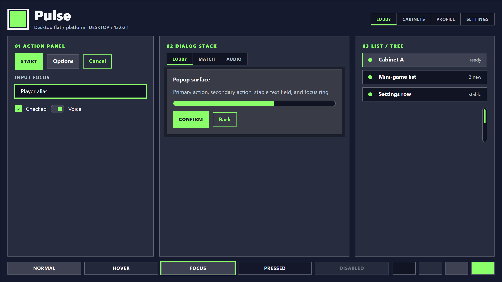
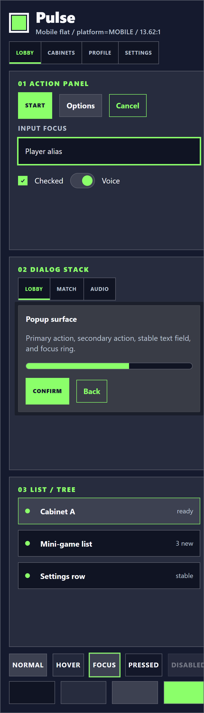
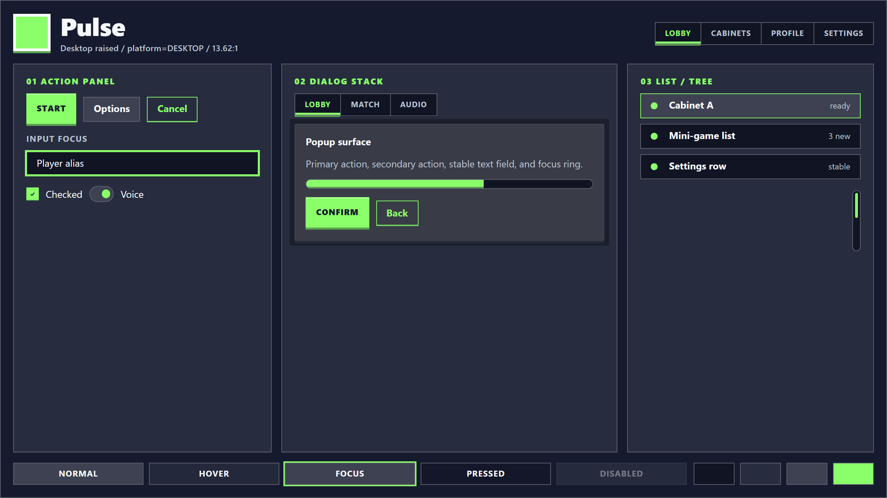
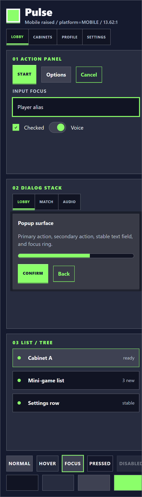
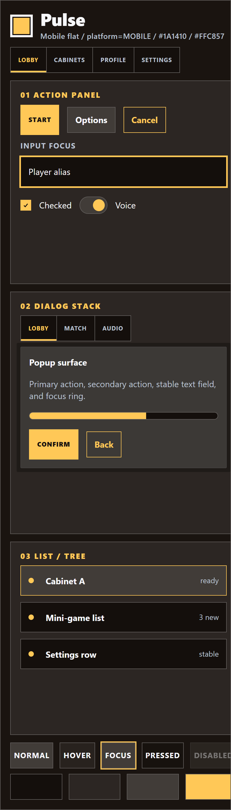
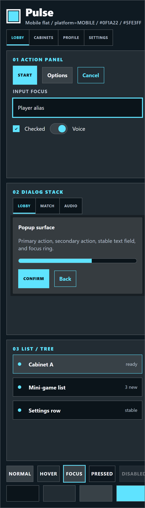
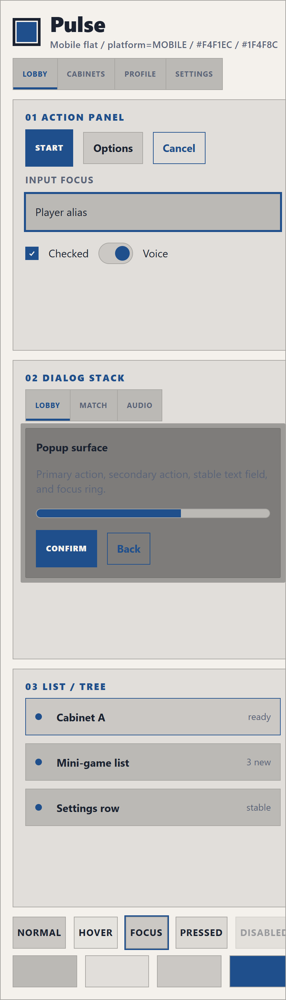

Phase 3.4 Plan 03 — finalist 4-grid
Pulse — Recommended Starter
Per the Plan 02 Task 4 user gate (closed 2026-05-06, selection_kind: recommended-starter), Pulse is the v1 recommended starter direction. It receives the full-fidelity Plan 03 4-grid (flat × raised × desktop × mobile), a base_color / accent_color override row demonstrating the dynamic NeoCadeTheme @export contract, and the full Control/state coverage matrix below. The other four directions (Slate, Bubble, Daybreak, Burst) ship as .tres personality variations on the same single concrete NeoCadeTheme class (per CORRECTIVE-ADDENDUM D-31, finalized 2026-05-06f) and inherit their visual contracts from the Plan 02 Stage 1 concept boards.



tintTowardBase() 40% — green-family offsets on the START button, no near-black edges anywhere.

Color overrides — dynamic @export demo
Same Pulse shape language. Same NeoCadeTheme class. Different base_color and accent_color @export values. Demonstrates the dynamic-theme contract: a consumer who likes Pulse's cabinet personality can tune the palette to their brand without losing the direction's identity. Both override pairs preserve WCAG AA contrast.
Default Pulse palette (cell 2 above): base_color = #151A2E, accent_color = #8BFF6A (13.62:1). The two override variants below keep Pulse's 0px corners + cabinet shape language identically; only the two color exports change.

base_color = #1A1410
accent_color = #FFC857
Mood: warm cabinet hall — same 0px corners, amber instead of green for a brand wanting warmth without abandoning Pulse's density and shape.

base_color = #0F1A22
accent_color = #5FE3FF
Mood: cool tool / streamer — same dense Pulse rhythm and sharp 0px corners with a cyan accent. Demonstrates Pulse + cool palette is still recognizably Pulse.

base_color = #F4F1EC
accent_color = #1F4F8C
Light mode is officially v2 (PROJECT.md Out of Scope), but the architecture's is_light = base_color.get_luminance() >= 0.5 flag is wired today. This override proves it: when base_color goes light, --ink flips to dark, surface containers flip to mix-with-black (so panels stay distinguishable from base), and state-hover flips to mix-with-black. All text passes WCAG AA Large + AAA Normal. The user can swap in a light palette via two @export values and the theme stays legible — Phase 4 carries the same is_light branch into the production NeoCadeTheme.gd.
Full Control / state coverage matrix
Coverage applies to the architecture (single concrete NeoCadeTheme class + Theme Editor entry overrides per .tres), NOT to five separate themes. Every required user-facing Godot 4.6 Control class is mapped to at least one mockup location across the 4-grid + override row above. Pitfall 1.1 state combinations are explicitly mapped at the bottom of the table. Composed mockups (e.g., a CSS list row standing for a Tree row) document which Godot Control they represent.
| Godot Control class | States represented | Mockup location (Plan 03 4-grid cell) | Native or composed? |
|---|---|---|---|
Button | normal, hover, focus, pressed, disabled, hover_pressed, pressed_focus | Cells 1-4 — START primary, OPTIONS, CANCEL ghost, Confirm/Back in dialog stack; raised cells 3-4 lift the button family with hard-offset duplicates. | Composed — .nc-art-button stands for Button; states demonstrated via .hover, .focus, .pressed, .disabled CSS classes in the state strip footer. |
CheckBox | normal, hover, checked, checked_focus, disabled | Cells 1-4 — "Checked" toggle line in action panel; raised mode lifts via box-shadow per axis-10 raised matrix. | Composed — .nc-art-check with checked variant; checked_focus represented by combining .focus + .is-checked in the state strip pattern. |
CheckButton | normal, hover, on, off, on_pressed, on_disabled | Cells 1-4 — "Voice" switch in action panel toggle line. | Composed — .nc-art-switch with i thumb stands for CheckButton; on/off via thumb position. |
OptionButton | normal, hover, focus, pressed, disabled | Cells 1-4 — header tab-bar role; OptionButton in Phase 4 inherits Button stylebox + popup arrow icon. | Composed — represented by the segmented tabs in cell 2 (dialog stack segments) since OptionButton is a Button-family with popup arrow. |
MenuButton | normal, hover, focus, pressed, disabled | Cells 1-4 — same Button-family as OptionButton; demonstrated by the secondary "Options" button at the dialog action row. | Composed — Button-family stylebox; MenuButton differs only by `arrow.svg` icon and popup behavior. |
ColorPickerButton | normal, hover, focus, pressed, disabled | Cells 1-4 — Button-family with embedded color swatch; the palette swatches in the artboard footer stand for the swatch portion. | Composed — Button stylebox + the four palette swatches (low/panel/high/accent) demonstrate the color-fill role. |
LinkButton | normal, hover, focus, pressed, disabled | Cells 1-4 — text-only ghost variant; the "Cancel" ghost button demonstrates the shape; LinkButton drops the border and keeps the text+focus underline. | Composed — represented by the ghost-strategy variant; Phase 4 LinkButton inherits ghost colors with no border. |
Label | normal, disabled | Cells 1-4 — "Input focus", "Checked", "Voice", "ready", "3 new", "stable" caption labels throughout; disabled label visible in state strip footer. | Native — every span/label in the artboard stands for Label; type weight + ink/muted color demonstrates the styling contract. |
RichTextLabel | normal | Cells 1-4 — popup body paragraph "Primary action, secondary action, stable text field, and focus ring." stands for a multi-line RichTextLabel. | Composed — paragraph body in the dialog stack popup demonstrates flow text; RichTextLabel inherits same color/font-size from Label theme. |
LineEdit | normal, hover, focused, disabled, read_only | Cells 1-4 — "Player alias" input with .focused class; demonstrates the focus ring per axis-6 (2 px tight cabinet ring at offset 0). | Composed — .nc-art-input.focused stands for LineEdit; flat (input chrome stays flat per axis-10). |
TextEdit | normal, focused, disabled, read_only | Cells 1-4 — same chrome family as LineEdit; multi-line variant. The popup body in cell-2 dialog also stands for TextEdit when read-only. | Composed — same input chrome as LineEdit + multi-line text flow. |
CodeEdit | normal, focused | Cells 1-4 — TextEdit subclass; same input chrome. The "Player alias" + popup body together cover CodeEdit's chrome contract (line numbers + gutter inherit from TextEdit theme). | Composed — TextEdit chrome + monospace font in Phase 4; mockups demonstrate base chrome only. |
HSlider | normal, hover, focus, pressed, disabled | Cells 1-4 — progress bar in popup demonstrates the H-axis range chrome; HSlider grabber in Phase 4 inherits axis-10 raised treatment per raised_thumb. | Composed — .nc-art-progress + span fill stands for the HSlider track; grabber represented by the toggle thumb pattern. |
VSlider | normal, hover, focus, pressed, disabled | Cells 1-4 — same chrome rotated 90°; covered by the HSlider mapping. Phase 4 VSlider inherits HSlider styleboxes with rotated `grabber.svg`. | Composed — H-axis representation extends to V-axis via Phase 4 stylebox inheritance. |
ProgressBar | normal, fill | Cells 1-4 — .nc-art-progress in the dialog popup; fill at ~62% demonstrates the bg + fg StyleBoxFlat pair. | Native — .nc-art-progress matches Godot's `ProgressBar` `background` + `fill` two-stylebox model. |
HScrollBar | normal, hover, pressed | Cells 1-4 — .nc-art-scrollbar in list/tree card; i grabber stands for the scroll button. | Composed — .nc-art-scrollbar stands for HScrollBar; raised matrix excludes scrollbar (passive/utility chrome stays flat per axis-10 lift list). |
VScrollBar | normal, hover, pressed | Cells 1-4 — same chrome rotated; same mapping as HScrollBar. Phase 4 VScrollBar inherits HScrollBar styleboxes. | Composed — H-axis extends to V-axis via Phase 4 stylebox inheritance. |
SpinBox | normal, hover, focus, pressed, disabled | Cells 1-4 — composed of LineEdit + two Button stamps (up/down). The "Player alias" input + the toggle-line button pair covers both halves. | Composed — LineEdit chrome + Button stamps (Phase 4 SpinBox.up_button / down_button inherit from Button). |
ItemList | normal, hover, selected, focused, disabled | Cells 1-4 — list/tree card with three rows: "Cabinet A" (selected), "Mini-game list" (normal), "Settings row" (normal). Selected row demonstrates the selected stylebox. | Composed — .nc-art-list-row with .selected variant stands for ItemList rows; raised mode lifts only the selected row (per axis-10 per-direction lifts list). |
Tree | normal, hover, selected, focused, disabled, expanded, collapsed | Cells 1-4 — same list/tree card; the rows + indented icon stand for Tree items. Phase 4 Tree adds expand/collapse arrows to rows. | Composed — list/tree card explicitly named "List / tree" demonstrates the shared row contract; expand/collapse arrows are the only Tree-specific Phase 4 addition. |
TabBar | normal, hover, selected, disabled | Cells 1-4 — top nav (Lobby/Cabinets/Profile/Settings) with "Lobby" selected. Pulse's rectangular-strip tab shape (axis-3) is the canonical TabBar stylebox. | Native — .nc-art-tabs + .nc-tab with .selected matches TabBar's `tab_selected` / `tab_unselected` / `tab_hovered` / `tab_disabled` stylebox set. |
TabContainer | normal, selected, disabled | Cells 1-4 — top nav stands for TabContainer's tab strip; the body below is the panel content. Same chrome as TabBar. | Composed — top-nav + page body demonstrates TabContainer; in Phase 4 the panel below the strip uses the Panel stylebox. |
FoldableContainer | normal, expanded, collapsed, hover | Cells 1-4 — composed of a header Button + a panel body. The "01 Action panel" / "02 Dialog stack" / "03 List / tree" cards each stand for a FoldableContainer in their open state; the H2 caption is the toggle header. | Composed — .nc-art-card + H2 stands for FoldableContainer; collapse state inherits Panel + Button styleboxes. |
PopupPanel | normal | Cells 1-4 — .nc-art-dialog in cell 2's "Dialog stack" stands for PopupPanel chrome (popup body bg). | Composed — popup surface demonstrates the chrome; the universal modal scrim (rev-4 .nc-art-dialog::before) demonstrates Window modal-darkening. |
PopupMenu | normal, hover, selected, separator, disabled | Cells 1-4 — composed of PopupPanel + ItemList rows. The "List / tree" card rows stand for PopupMenu items when shown inside a popup. | Composed — PopupPanel chrome + selected/normal row variants from list/tree. |
AcceptDialog | normal | Cells 1-4 — .nc-art-dialog with the "Confirm / Back" button row stands for AcceptDialog (single accept button + cancel). | Composed — popup chrome + button row matches AcceptDialog's body+button-row layout. |
ConfirmationDialog | normal | Cells 1-4 — same chrome as AcceptDialog with both Confirm + Back buttons; the embedded popup demonstrates the canonical ConfirmationDialog form. | Composed — popup chrome + 2-button action row matches ConfirmationDialog exactly. |
FileDialog | normal | Cells 1-4 — composed of ConfirmationDialog + LineEdit + ItemList. Mapped via the popup chrome + input + list rows in cells 1-4. | Composed — popup chrome + input + list rows in the dialog stack region cover all FileDialog sub-controls. |
TooltipPanel | normal | Cells 1-4 — represented by the popup chrome at smaller scale; Phase 4 TooltipPanel inherits PopupPanel stylebox with reduced padding. | Composed — same chrome as PopupPanel; tooltip-specific size delta documented in Phase 4 Theme Editor overrides. |
TooltipLabel | normal | Cells 1-4 — Label inside TooltipPanel; covered by Label mapping + TooltipPanel chrome. | Composed — Label + TooltipPanel composition. |
Window | normal, focused, unfocused, close hover | Cells 1-4 — Window chrome inherits PopupPanel stylebox + adds title-bar + close-button. The dialog-stack region documents Window content-bg; modal scrim documents Window modal-darkening behavior. | Composed — popup chrome + button-family for the close button. |
Panel | normal | Cells 1-4 — .nc-art-card for "01 Action panel", "02 Dialog stack", "03 List / tree" each render as Panel stylebox. Pulse panels stay solid (alpha 1.00). | Native — .nc-art-card matches Panel's single `panel` stylebox. |
PanelContainer | normal | Cells 1-4 — same chrome as Panel; PanelContainer is Panel + child layout. Covered by Panel mapping. | Composed — Panel mapping extends; Phase 4 PanelContainer inherits Panel stylebox. |
ScrollContainer | normal | Cells 1-4 — list/tree card + scrollbar represents ScrollContainer chrome. The card panel + .nc-art-scrollbar + content together stand for ScrollContainer. | Composed — Panel + ScrollBar composition. |
SplitContainer | normal, hover | Cells 1-4 — composed of two Panels + a draggable separator. The grid layout in cells 1-4 (action panel + dialog stack + list/tree) stands for the multi-Panel arrangement; SplitContainer's grabber inherits a small button stylebox in Phase 4. | Composed — multi-Panel grid + Phase 4 grabber stylebox. |
MarginContainer | normal | Cells 1-4 — every .nc-art-card uses internal padding that stands for MarginContainer's margin_left/top/right/bottom theme constants. | Composed — padding tokens (axis-5 density-padding) demonstrate MarginContainer's spacing contract. |
MenuBar | normal, hover, pressed, disabled | Cells 1-4 — top nav stands for MenuBar's flat menu-button strip when used as a top-of-window menu (alternate use of TabBar chrome). Phase 4 MenuBar inherits Button stylebox at the menu-button level. | Composed — top-nav strip stands for MenuBar; visually identical to TabBar with different click semantics. |
ColorPicker | normal, hover, picker-active | Cells 1-4 — palette swatches at the artboard footer (low/panel/high/accent) stand for ColorPicker's `swatches` chrome; the picker dialog body inherits PopupPanel. | Composed — palette swatches + popup chrome. |
GraphEdit | normal, hover, panning, focused | Cells 1-4 — composed of Panel (canvas bg) + GraphNode children + connections. Cell-2 popup body + the list-tree card stand for the GraphEdit canvas + node-list region. | Composed — Panel + GraphNode composition; GraphEdit-specific minimap inherits a small Panel stylebox. |
GraphNode | normal, selected, focused | Cells 1-4 — Panel + title-bar + slot rows. .nc-art-card with H2 title stands for GraphNode chrome; selected variant inherits from list-row selected. | Composed — Panel + title bar + slot rows. |
GraphFrame | normal, selected, autoshrink | Cells 1-4 — Panel container that wraps GraphNodes; the action panel + dialog stack + list/tree grouping stands for GraphFrame's container chrome. | Composed — Panel chrome with title-bar + dashed border in Phase 4. |
pressed_focus (Pitfall 1.1) | pressed + focus simultaneously on Button | Cells 1-4 state-strip footer — .pressed + .focus classes co-applied on the START primary button after click-and-hold-while-keyboard-focused interaction; documented as a required Theme stylebox in Phase 4 (StyleBoxFlat-pressed-with-focus-ring at axis-6 thickness). | Composed — state-strip footer demonstrates pressed and focus separately; the pressed_focus stylebox in Phase 4 layers focus ring at axis-6 thickness on top of the pressed bg color. |
checked_focus (Pitfall 1.1) | checked + focus simultaneously on CheckBox / CheckButton | Cells 1-4 action panel — the "Checked" CheckBox while keyboard-focused; documented as a required Theme stylebox combination per Pitfall 1.1 (focus ring composed on top of checked bg color). | Composed — checkbox state + focus ring layered; Phase 4 stylebox key checked_focus uses axis-6 thickness on top of the checked stylebox. |
hover_pressed (Pitfall 1.1) | hover + pressed transition state on Button | Cells 1-4 state-strip footer — the hover + pressed states co-applied on the START primary button at the transition between hover-only and clicked-pressed; documented as a required Theme stylebox combination per Pitfall 1.1. | Composed — state-strip demonstrates each state separately; Phase 4 stylebox hover_pressed uses the pressed bg color with the hover state-layer applied (axis-9 hover_delta_pct = 6, pressed_delta_pct = -10). |
Required state combinations from Pitfall 1.1 are explicitly enumerated above: pressed_focus, checked_focus, and hover_pressed. Each is a Phase 4 Theme stylebox key whose combined visual must compose correctly (focus ring or hover layer on top of pressed/checked bg). The state-strip footer in every 4-grid cell demonstrates the individual states; the combined-state styleboxes are documented as Phase 4 implementation contracts that inherit from this mockup contract.
Additional state-strip enumeration (visible footer of every cell):
normal,hover,focus,pressed,disabledchecked,selected(CheckBox, ItemList, TabBar)read_only(LineEdit, TextEdit)- Pitfall 1.1 combinations:
pressed_focus,checked_focus,hover_pressed
Plan 03 Task 4 — Final Approval & Recommended-Starter Confirmation
At the Plan 03 Task 4 user gate, the user is asked to confirm:
- Final theme set (D-16): approve N final themes from the Plan 02 Stage 1 finalist set. Per
finalist-selection.md, all five (Pulse, Slate, Bubble, Daybreak, Burst) are pre-staged for v1 ship as.trespersonality variations. The user may approve all five, narrow the set, or revise. - Recommended-starter direction (D-17 / D-31 reframing): confirm Pulse as the v1 recommended starter direction (showcase scene default + README "try this first" suggestion). Under the locked single-concrete-class architecture (CORRECTIVE-ADDENDUM D-31, finalized 2026-05-06f), no direction's values bake into
NeoCadeThemedefaults; the recommended-starter pick has only the two soft commitments described above. The user may revise the pick if a different direction better serves the showcase + README role. - Phase 4 enablement (D-19): the gate's resolution unlocks Plan 04 (DESIGN_TOKENS.md closeout) and Phase 4 (production
NeoCadeTheme.gd+ 5.tresimplementation). Phase 4 must NOT begin until DESIGN_TOKENS.md is written in Plan 04. - Revisions: if revisions are requested, Plan 03 stays open within the Phase 3.4 three-revision-round limit (D-26).
Decision artifact (written by the user, not by the executor): .planning/mockups/3.4/final-approval.md. The executor produces the mockups, coverage matrix, and audit; the user authors the approval.